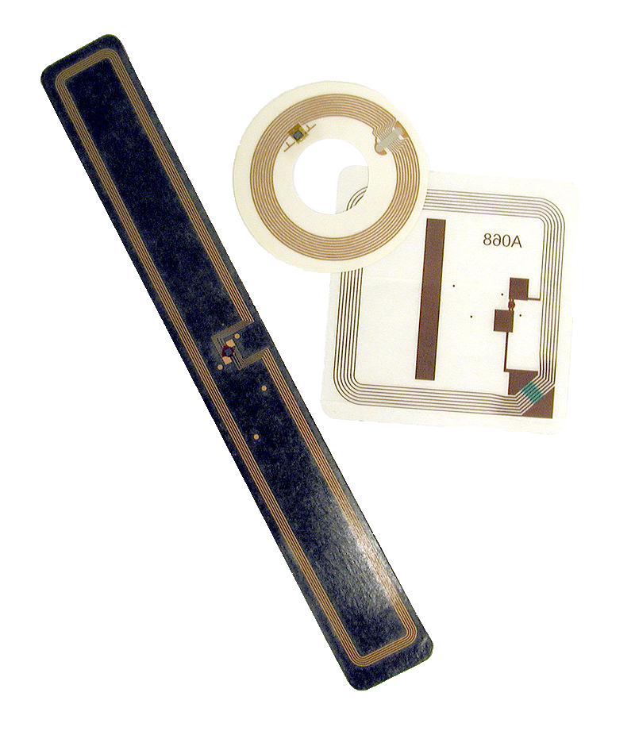

IOT
1. What is IOT in general?
IOT means “Internet of Things” which simply means to embed all kind of microchips in a “Thing” even your Toaster or coffee machine.
Sensors of course are mandatory to collect and process data.
2. What is the purpose of IOT?
The purpose of IOT is to be able control almost everything with your Smartphone for example to control the temperature of your house,
and closing your shutters when you are not at home.
Currently there are some companies which sell security cameras,
which can easily be accessed by an App from almost any location.
3. Applications
The first IOT device was the RFID-Chip, which is basically a microchip used to store and transmit a short amount of data wirelessly.
It is used to identify People using the RFID-Chip in their passport.

The most known and recent piece of IOT is Echo by Amazon.
It only consists of a chipset a speaker, and a microphone.
It recognizes voice and executes the desired command like ordering the pizza or calling someone.